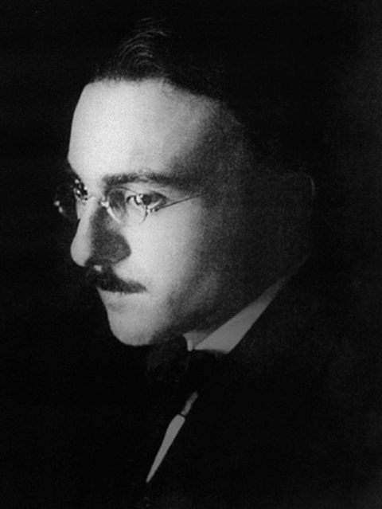
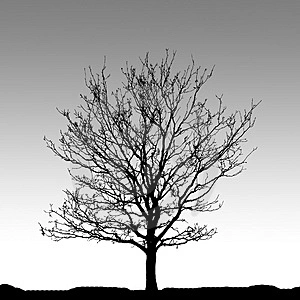

Poesia
Substantivo feminino
Composição poética, com rimas ou em versos livres, em que o autor expressa seus sentimentos, ideias, impressões etc.
A flor e a náusea
Carlos Drummond de Andrade
[...]
Uma flor nasceu na rua!
Passem de longe, bondes, ônibus, rio de aço do tráfego.
Uma flor ainda desbotada
ilude a polícia, rompe o asfalto.
Façam completo silêncio, paralisem os negócios,
garanto que uma flor nasceu.
Sua cor não se percebe.
Suas pétalas não se abrem.
Seu nome não está nos livros.
É feia. Mas é realmente uma flor.
Sento-me no chão da capital do país às cinco horas da tarde
e lentamente passo a mão nessa forma insegura.
Do lado das montanhas, nuvens maciças avolumam-se.
Pequenos pontos brancos movem-se no mar, galinhas em pânico.
É feia. Mas é uma flor. Furou o asfalto, o tédio, o nojo e o ódio.

Autopsicografia
Fernado Pessoa
O poeta é um fingidor
Finge tão completamente
Que chega a fingir que é dor
A dor que deveras sente.
E os que lêem o que escreve,
Na dor lida sentem bem,
Não as duas que ele teve,
Mas só a que eles não têm.
E assim nas calhas de roda
Gira, a entreter a razão,
Esse comboio de corda
Que se chama coração.
O tempo
Mário Quintana
A vida é uns deveres que nós trouxemos para fazer em casa.
Quando se vê, já são 6 horas: há tempo…
Quando se vê, já é 6ª-feira…
Quando se vê, passaram 60 anos!
Agora, é tarde demais para ser reprovado…
E se me dessem – um dia – uma outra oportunidade,
eu nem olhava o relógio
seguia sempre em frente…
E iria jogando pelo caminho a casca dourada e inútil das horas.

Soneto XII
William Shakespeare
Quando a hora dobra em triste e tardo toque
E em noite horrenda vejo escoar-se o dia,
Quando vejo esvair-se a violeta, ou que
A prata a preta têmpora assedia;
Quando vejo sem folha o tronco antigo
Que ao rebanho estendia a sombra franca
E em feixe atado agora o verde trigo
Seguir no carro, a barba hirsuta e branca;
Sobre tua beleza então questiono
Que há de sofrer do Tempo a dura prova,
Pois as graças do mundo em abandono
Morrem ao ver nascendo a graça nova.
Contra a foice do Tempo é vão combate,
Salvo a prole, que o enfrenta se te abate.